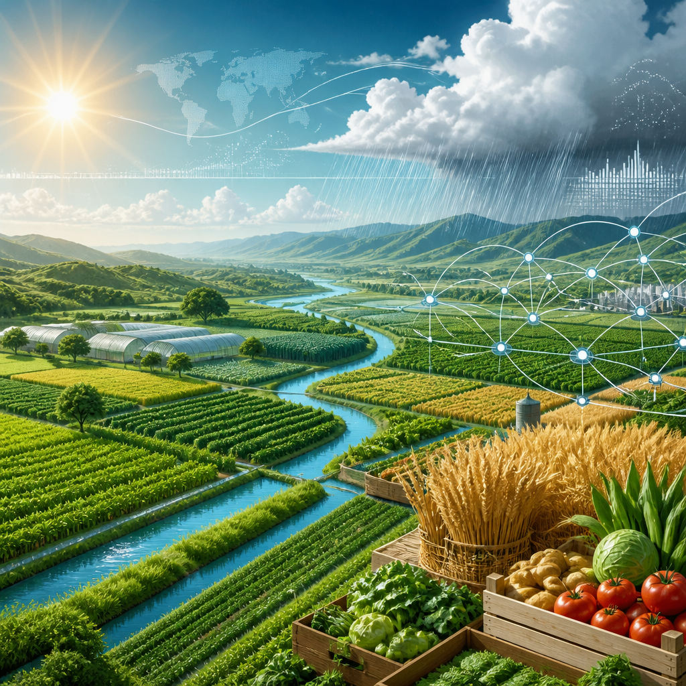

Quattro incontri online del CMCC esplorano come la conoscenza sul clima possa sostenere decisioni concrete.
Cibo, finanza, futuro: sono tre parole che racchiudono una stessa domanda, al centro degli incontri proposti dal CMCC durante la Climate Week NYC. Come può la conoscenza sul clima diventare utile quando occorre prendere decisioni? Il punto non è soltanto produrre dati, ma capire se quei dati siano quelli giusti, costruiti attorno alle scelte che persone, imprese e istituzioni devono compiere.
Dal 20 al 27 settembre, la Climate Week NYC riunisce ricercatori, responsabili delle politiche, imprese e società civile provenienti da tutto il mondo. Il confronto riguarda l’azione per il clima e la transizione verso un futuro più resiliente, cioè più capace di affrontare e adattarsi alle conseguenze degli eventi climatici. In questo contesto, il CMCC partecipa con quattro eventi online gratuiti, dedicati a diversi modi in cui la conoscenza climatica entra in relazione con la società.
I sistemi alimentari sono uno dei punti di partenza del dibattito. Secondo i dati richiamati dal CMCC, generano all’incirca dal 31% al 34% delle emissioni globali di gas serra. I gas serra sono gas che trattengono calore nell’atmosfera. Allo stesso tempo, 2,7 miliardi di persone non possono permettersi una dieta sana e 1,3 miliardi dipendono dal lavoro agroalimentare per il proprio sostentamento.
Questi numeri mostrano perché il tema del cibo non possa essere separato dalle questioni climatiche e sociali. Da una parte vi sono le emissioni associate ai sistemi che producono e distribuiscono alimenti; dall’altra, l’accesso a un’alimentazione sana e il lavoro da cui dipendono moltissime persone. Portare questi aspetti nello stesso confronto significa osservare il rapporto fra clima e società senza ridurlo a un solo settore.

Un altro tema riguarda gli eventi meteorologici estremi: siccità, alluvioni, ondate di calore e tempeste. Questi eventi stanno sottraendo ogni anno miliardi alle economie nel mondo. Il loro impatto, sottolinea il CMCC, non si ferma alle mappe dei pericoli: arriva ai bilanci di imprese e governi.
Una mappa dei pericoli descrive dove può manifestarsi un fenomeno. Ma il passaggio indicato dal CMCC è più ampio: considerare anche i rischi che emergono nelle attività economiche e nelle scelte pubbliche. Per questo il confronto comprende la finanza, insieme ai sistemi alimentari, ai servizi climatici e alla comunicazione.
I servizi climatici sono un ambito in cui la conoscenza sul clima si collega alle decisioni. La questione posta dal CMCC è diretta: mentre la scienza del clima produce più dati che mai, quei dati rispondono davvero alle necessità di chi deve scegliere? È una domanda che riguarda il modo in cui l’informazione viene costruita e messa a disposizione, non soltanto la sua quantità.
I quattro appuntamenti condividono quindi un’idea: la conoscenza vale quanto la sua capacità di informare l’azione. Ricerca, politiche, imprese e società civile sono chiamate a discutere non solo delle informazioni disponibili, ma anche del loro uso nei contesti in cui si decide sul cibo, sulla finanza, sui servizi climatici e sulla comunicazione.
La proposta del CMCC alla Climate Week NYC mette in relazione aree diverse della ricerca climatica. L’obiettivo dichiarato è esplorare come la conoscenza possa orientare le decisioni. In un quadro segnato da emissioni, difficoltà di accesso a una dieta sana, dipendenza dal lavoro agroalimentare ed effetti economici degli eventi estremi, la domanda sui dati giusti diventa parte essenziale della discussione sul futuro.
Il CMCC partecipa alla Climate Week NYC con quattro eventi online gratuiti. Gli incontri collegano sistemi alimentari, finanza, servizi climatici e comunicazione. Al centro c’è il rapporto fra conoscenza climatica e decisioni concrete, con attenzione agli effetti degli eventi estremi e al ruolo dei dati.
Questo articolo l'hai letto sul blog di Meteo News Radar: un'app che ti mostra da dove vengono i numeri, invece di limitarsi a dartelo. E ogni mattina ne trovi uno nuovo come questo.